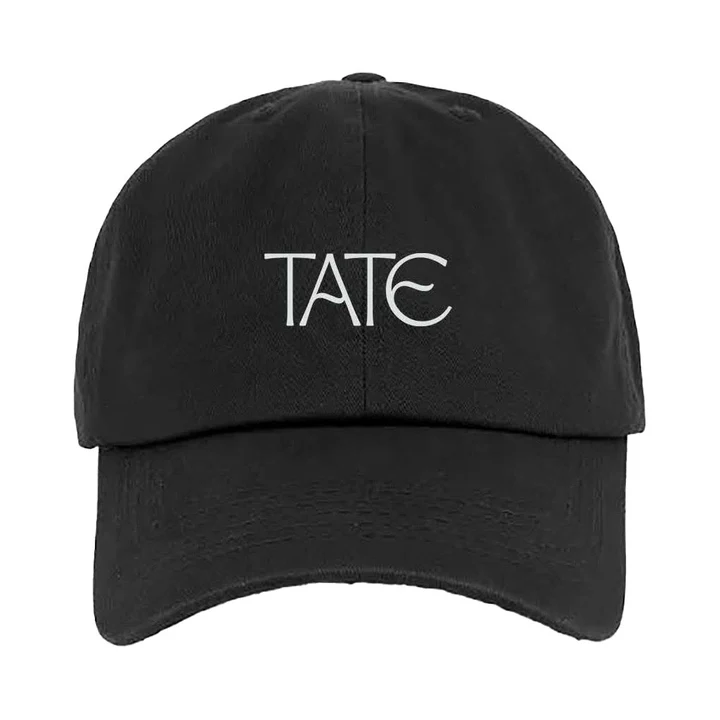

01
01
Miss Possessive Tour TeeFrente & Costas
%20(2).png?v=2)
%20(3).png) A thousand ways to begin.
A thousand ways to begin.
Dançarina primeiro. Contadora de histórias sempre.
Com apenas 16 anos, lançou you broke me first, que se tornou viral a nível mundial. Hoje, aos 23, Tate é reconhecida por transformar emoções pessoais em pop intimista e atuações cheias de movimento.
A dança foi o seu primeiro palco: aos 13 anos, chegou à final de So You Think You Can Dance: The Next Generation. Essa precisão continua presente em cada performance.
Dos vídeos caseiros às grandes digressões, Tate construiu uma identidade que cruza movimento, vulnerabilidade e instinto pop.
Uma promessa de infância. Um percurso construído passo a passo.
Chega à final de So You Think You Can Dance: The Next Generation.
2017 / Canal de YouTube Create With Tate
No seu canal de YouTube, partilhava o processo criativo: ideias em construção, câmara ligada e piano à mão.
Escolhe uma tecla e começa a tua versão.Um disco. Um universo.
A sensação de estar quase lá. Pop afiado, desejo sem filtro e espaço para mudar de ideias.
Pré-escutas de até 40 segundos.
Encontra a tua.
Seleciona uma faixa.
A agulha encontra sempre outra história
Da tour para a rua.
01
 02
02
 03
03
 04
04

 05
05
 Acessório
06
Acessório
06
 Acessório
07
Acessório
07

Acessório 08

A assinatura olfativa de Tate McRae
A fragrância de estreia oficial de Tate McRae. Fresca, magnética e ousada: uma harmonia cristalina de notas aquáticas e florais que traduzem a energia intensa do palco e a presença magnética das suas canções.
Citrinos solares & água pura
Pétalas brancas & jasmim
Âmbar quente & baunilha